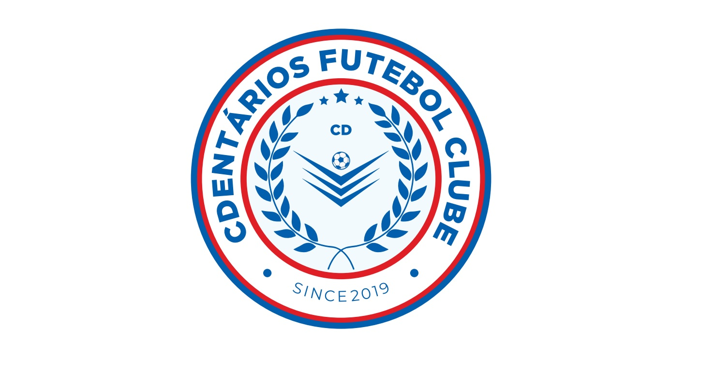

O time foi fundado no ano de 2019 pelos integrantes atuais da diretoria. A história de como esse time surgiu é um tanto quanto peculiar, visto que a ideia inicialmente era criar uma equipe onde todos os jogadores trabalhassem num mesmo setor de Centro de Distribuição (dai a palavra CD) de uma firma localizada na pequena cidade de Cerquilho. A intenção era elaborar um time no qual pudessemos usufruir dos campeonatos de "várzea" que existem na região, lógicamente com uma possibilidade mínima de ganhar, e jogar recreativamente todos os fins de semana, ja que o homem moderno não vive sem seu querido futebol.
Desse objetivo surgiram vários esboços de escudos, alguns bons e outros nem tanto. O primeiro a ser usado foi estampado em nossa primeira camiseta, onde ainda estavamos decidindo quais seriam as cores que nos representariam mundo a fora. Temos até hoje o esboço da primeira camiseta que fizemos, onde surpreendentemente muitas pessoas compraram e ajudaram na causa do nosso querido time CDentarios.
Esse uniforme preto e dourado representava nosso manto nos primórdios do time. Foi com que ele que conseguimos cravar nossa primeira vitória contra o time Beer F.C (famosos fregueses). Ele tinha uma cor muito bonita e representava bem o que queriamos na época, porém, depois surgiu uma necessidade de mudar as cores e mudar o nosso escudo, que estava um tanto antiquado para um time de futebol. Foi ai que surgiu o escudo que nos representa hoje em dia, com as cores pulsantes Azul, Vermelha e Branco.
Um dia histórico para o nosso time foi quando ganhamos nosso primeiro amistoso contra um outro time da cidade, chamado de Beer F.C. Foi um jogo muito acirrado com muitos gols, onde conseguimos sair com a vitória e nos consagrar campeões. Mais adiante teriam outros jogos que ganhariamos e perderiamos deles, fazendo com que esse time virasse o nosso principal rival. Obviamente que a amizade fala mais alto, e todos vamos tomar uma após o jogo para comentar sobre o mesmo e desestressar depois de uma semana dificil para todos.
Atualmente estamos em buscas de mais jogos e procurando por mais desafios para nossos jogadores, treinamos todos os fins de semana para alcançar o apice e buscamos sempre uma forma de não deixar nossos atletas parados. Por conta da pandemia do COVID, muitos lugares acabaram fechando e ficamos sem jogar por alguns meses, porém agora voltamos com força total para se tornar o melhor time de Cerquilho.